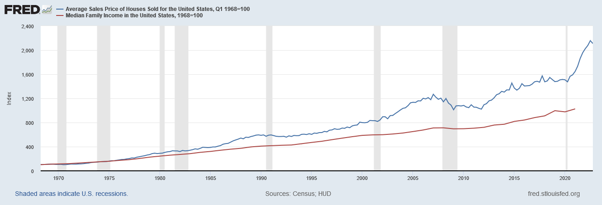

Wage
Calvin (Deutschbein)
01 May 2023
Announcements
- Discussion day
- Then party day 🎉
Review Question 1
Cooper & Kroeger estimate $15B in losses to minimum wage violations in the US. About how much is this per person?
Review Question 2
The DoL protects a workforce of 135M workers. How much is lost per worker?
Review Question 3
Cooper & Kroeger estimate half of losses to 16-24 yr olds. FRED estimates 21.1M 15-24 yr olds. About how much is this per person?
Review Question 4
Cooper & Kroeger estimate half of losses to nonwhite workers. The Census Bureau ~75% "white" and ~60% "white, not Hispanic or Latino" in 2020. About how many dollars are lost per person for people of color.
Food for Thought
As far as I can tell, EPI didn't report an intersectional data (e.g. young people of color, immigrants by race, etc)
- I want to show wage growth vs productivity.
- I want to show union density.
- I want to define intersectionality at a high level.
Wage Growth
You may remember this plot:

This is relevant data for most people, but I don't believe widely known!
Causes
It is worth question what may be driving housing costs up faster than wages.
- It isn't that the people making houses are getting paid more - wages aren't up!
- It could be that materials cost more, but wages also aren't up in extraction industries (lumber, mining)
- So mostly, whatever is causing them to go up probably shouldn't be tied back to wages (thoughts?)
Causes
It is worth question what may be driving housing costs up faster than wages.
- Are houses now worth more? Are they better, larger, in more desirable places?
- Are houses more difficult to make now? Do they require more hours of construction, lumber, etc.
House value is hard to answer, so if you have something then let me know.
Productivity
There are people that try to measure how productive a given worker is.

Productivity
Wages have not kept up with productivity!

My claim: Some of the gap there is wage theft.
- We could claim, by construction, it is all wage theft (but that isn't a data argument).
Productivity
This doesn't seem to be driving housing though.

Productivity
Stock Indices (Wilshire here, FRED didn't have others back to 1974) outpace housing by about as much as productivity outpaces wages.

Life pro-tip: I rent and buy index funds btw.
Review Question 5
"Workers not covered by unions... are almost twice as likely (4.4 percent) to experience minimum wage violations as those in a union or covered by a union contract (2.3 percent)."
"those not covered by a union lose nearly one-quarter (24.0 percent) of their earnings on average. Those who are covered by a union lose an average of 17.4 percent of their earnings
A union worker expects to lose how much vs every dollar lost being non-union? (Wording HELP)
- ~$0.20
- ~$0.40
- ~$0.60
- ~$0.80
Review Question 6
US union density is ~11% (in 2017) while minimum wage violates cost ~$15B. At 100% union density, what would we expect violations to be?
Fun fact:
- Unionization could reduce losses 15B->6.7B, a decrease of 8.3B.
- The HUD's Public Housing Fund was 8.9B in 2022 (don't know 2017).
Fun fact:
Here's a Wikimedia union density plot that has Python source code on its file page

My claim: That number going down is bad.
Discuss
Discuss the EPI report and your thoughts.
Check out Ryan Cooper, a friend of a friend, on tech unionization.
Here.
{kind=link}